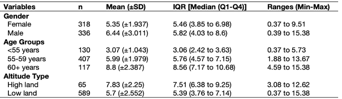

5 Creating table outputs in RStudio
This is a bonus section and so its entirely optional which can be studied at your own time. We are basically going to show you how to code out a table from RStudio to save you a lot time and energy, as well as potential grief with doing this in Microsoft Word.
Remember this table in Week 2’s lecture (see slide 42)?

We are going to use the dataset Health Data.csv. Download it by clicking this link [HERE]
We are producing an overall summary of the lung capacity volume (LCV) which is broken down by the following categorical characteristics: gender, age groups and altitude type.
You can use the dplyr package to compute the desired summary statistics accordingly by the categories using the group_by() and summarize() functions. We will try this for gender first.
# loading package for 'dplyr'
library("dplyr")
# import the health dataset
dataset.eg <- read.csv("Health Data.csv")
# this code churns out the summary statistics for gender only
# in the summarize() make it report n, mean, sd, median, quantiles and min and max
# store first part of result in object called `gender_table`
gender_table <-
dataset.eg %>%
group_by(gender) %>%
summarize(n = length(initialLCV), mean = mean(initialLCV), sd = sd(initialLCV),
median = median(initialLCV), q1 = quantile(initialLCV, 0.25), q3 = quantile(initialLCV, 0.75),
min = min(initialLCV), max = max(initialLCV))
# show result for gender
gender_tableThis the result for gender:
> gender_table
# A tibble: 2 × 9
gender n mean sd median q1 q3 min max
<chr> <int> <dbl> <dbl> <dbl> <dbl> <dbl> <dbl> <dbl>
1 female 318 5.35 1.94 5.46 3.85 6.98 0.373 9.51
2 male 336 6.44 3.01 5.82 4.03 8.60 0.388 15.4 You can view the result as a data frame by running the code View(gender_table).
Now, we can repeat this for the age groups and altitude type variables:
ageg_table <-
dataset.eg %>%
group_by(agegroup) %>%
summarize(n = length(initialLCV), mean = mean(initialLCV), sd = sd(initialLCV),
median = median(initialLCV), q1 = quantile(initialLCV, 0.25), q3 = quantile(initialLCV, 0.75),
min = min(initialLCV), max = max(initialLCV))
altitude_table <-
dataset.eg %>%
group_by(altitude) %>%
summarize(n = length(initialLCV), mean = mean(initialLCV), sd = sd(initialLCV),
median = median(initialLCV), q1 = quantile(initialLCV, 0.25), q3 = quantile(initialLCV, 0.75),
min = min(initialLCV), max = max(initialLCV))
# view results
ageg_table
altitude_tableSee results for the age groups and altitude:
> ageg_table
# A tibble: 3 × 9
agegroup n mean sd median q1 q3 min max
<chr> <int> <dbl> <dbl> <dbl> <dbl> <dbl> <dbl> <dbl>
1 <55 years 130 3.07 1.04 3.06 2.42 3.63 0.373 5.73
2 55-59 years 407 5.99 1.98 5.76 4.57 7.15 1.88 13.7
3 60+ years 117 8.80 2.39 8.56 7.17 10.7 4.59 15.4
> altitude_table
# A tibble: 2 × 9
altitude n mean sd median q1 q3 min max
<chr> <int> <dbl> <dbl> <dbl> <dbl> <dbl> <dbl> <dbl>
1 high land 65 7.83 2.25 7.51 6.38 9.25 3.08 12.6
2 low land 589 5.70 2.55 5.40 3.76 7.14 0.373 15.4Before appending the tables together, in each table - i.e., gender_table, ageg_table and altitude_table, we will need to change the name of the first column to something consist across all tables for the appendage to work.
# change the first column name to something like `varname_cat`
colnames(ageg_table)[1] <- "varname_cat"
colnames(gender_table)[1] <- "varname_cat"
colnames(altitude_table)[1] <- "varname_cat"